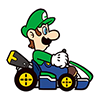
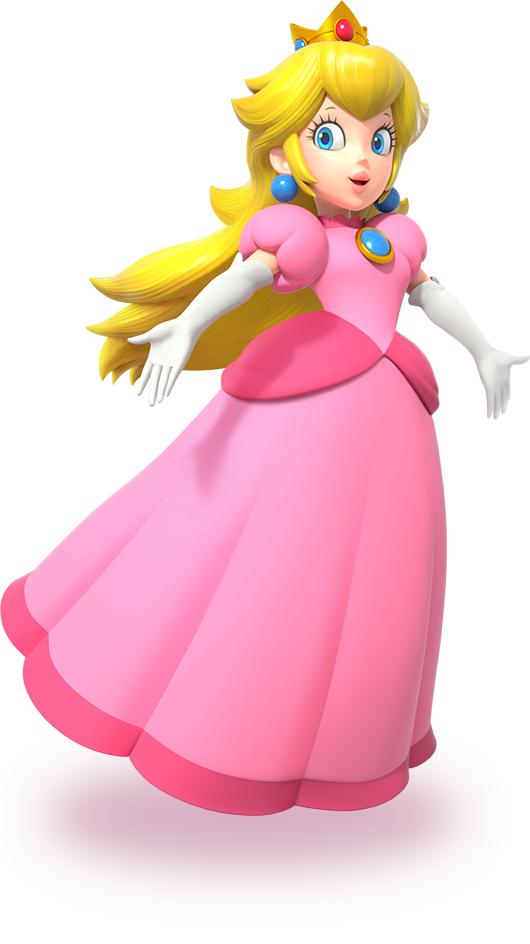
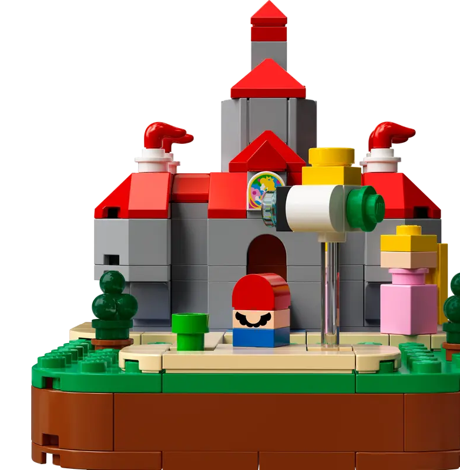

©2023 COPYRIGHT BY NINTENDO All Rights Reserved. Powered by Wavedesignlab.
Meet Mario, the mustached hero of the Mushroom Kingdom.
You may know him as a famous plumber, but he’s also a kart racer, sports star, caped hero, and more!
Using all his amazing abilities, he works with his friends to keep Mushroom Kingdim safe.
-
Mario">
Red hat, blue overalls, and trademark mustache.
Mario is always bright and lively.Run, jump, and power up with super mushrooms.
Go on an adventure around the world using a variety of actions and items.
They are good at sports, including golf and tennis,
and show off their fancy driving techniques.
Mario has been active in numerous games since appearing overseas in
the arcade version of “Donkey Kong” in 1981.
Mario's adventure continues with friends such as Luigi, Princess Peach, and Yoshi!
- 1985
- 1989
- 1991
- 2006
- 2013
- 2019
-
Nintendo Entertainment System
super mario bros
1985. 10.28
One day the kingdom of the peaceful mushroom people was invaded by the Koopa, a tribe of turtles famous for their black magic.
The quiet, peace-loving Mushroom People were turned into mere stones,
bricks and even field horsehair plants, and the Mushroom Kingdom fell into ruin.
The only one who can undo the magic spell on the Mushroom People and return them to their normal selves is the Princess Toadstool, the daughter of the Mushroom King.
Unfortunately, she is presently in the hands of Bowser, the King of the Koopa.
Mario hears about the Mushroom People’s plight and sets out on a quest to free the Mushroom Princess from the evil Koopa and restore the fallen kingdom of the Mushroom People.
You are Mario! It’s up to you to save the Mushroom People from the black magic of the Koopa! -

-
Game Boy
super mario land
1989. 8.11
Once upon a time, there was a peaceful world called Sarasaland. In this world there were 4 kingdoms named Birabuto, Muda, Easton and Chai.
One day the unknown space monster Tatanga emerged to try to conquer Sarasaland.
he wants to marry Princess Daisy of Sarasaland and make her his queen.
Mario came to know of these events, and he has started on a journey to the Chai Kingdom where Princess Daisy is held captive, in order to restore peace to Sarasaland.
Can Mario defeat Tatanga, release people from his interstellar hypnosis, and rescue Princess Daisy?
It's all up to you and Mario's skill. Go for it Mario!
-
Super Nintendo
Entertainment Systemsuper mario world
1991. 8.13
Having returned peace to Mushroom World, Mario and Luigi decide to take a leisurely vacation with Princess Peach. They set out for Yoshi’s Island in the magical island nation of Dinosaur Land far to the south.
But soon after arriving on the island, Princess Peach suddenly disappears. As Mario and Luigi desperately search for her, they discover a strange egg on the outskirts of the island. Then, before their very eyes, an odd little dragon hatches!
The dragon calls himself Yoshi and says, "Monstrous turtles recently appeared here in this Dinosaur Land. They have used magic to seal my friends inside eggs. I tried to help them, but the turtles are incredibly strong and cast a spell on me, too… Will you please come with me to rescue my friends?"
-
Nintendo DS
new super mario bros
2006. 5.15
Princess Peach has been kidnapped! While enjoying a picnic with Mario, the beloved ruler of the Mushroom Kingdom was whisked away by an unknown assailant.
How could this happen with Mario around?
According to Mario, the walk was going swimmingly when Mario and the princess spotted smoke billowing out of Peach’s Castle.
The mustachioed marvel immediately jumped into action and sped off toward the fire.
The moment he left her side, the princess vanished! -

-
Wii U
Super Mario 3D World
2013 .11.22
During an evening celebration, Mario and friends find a sparkling Pipe outside Princess Peach’s Castle.
Curious, they peek inside…and discover a fairy kingdom! Bowser has captured the Sprixie Princesses, so Mario and friends begin a new adventure!
-
Nintendo Switch
super mario maker 2
2019.6.28
super mario maker 2 Dive into the single-player Story Mode and play built-in courses to rebuild Princess Peach’s castle. Make your own courses, alone or together. And with a Nintendo Switch Online membership, share your courses, access a near-endless supply made by others, enjoy online multiplayer, and more!
-
character
Mario
The main hero of the Mushroom Kingdom.
Mario is always bright and cheerful and instantly recognizable
with his blue overalls, red cap, and trademark moustache.He's a trusted friend of Princess Peach, and he and his brother
Luigi are known across the land for their acts of bravery.
Mario excels at sports including tennis,golf,baseball,soccer,and even kart racing.
He's good at all of them! He's a plumber by profession but is really a jack of all trades. He uses his masterful jumping ability and a variety of power-ups to take on his archrival, Bowser.
-
character
Luigi 
Mario's brother and fellow hero of the Mushroom Kingdom.
Luigi is instantly recognizable in his trademark green hat and green shirtLuigi is kind but can be a bit nervous, especially around ghosts.
However, his abilities are on par with Mario's, so when these brothers team up,
there's nothing they can't achieve.
Luigi is taller and can jump higher than Mario.
If you look closely, you may also notice that the shape of his moustache is a bit different as well.
- 
-
character
Peach
The beloved princess of the Mushroom Kingdom.
She's extremely kind and is always working to create a world where everyone can live together happily.
Her signature pink dress is quite lovely.Princess Peach is always game for a variety of sports, and also enjoys baking and cooking.
Princess Peach and Mario are good friends and help each other out whenever they can.
-
character
Toad
A resident of the Mushroom Kingdom who works in service of Princess Peach.
Toad has red spots on his head, though others of his kind come in a variety of colors.Toad is very cheerful and loyal.
He does his best to help Mario and Luigi in their efforts to protect
the Mushroom Kingdom from Bowser, even if he ends endangering
himself in the process.
-
character
Bowser
The King of the Koopas.
Bowser is Mario's archrival and is always causing trouble in the Mushroom Kingdom.Bowser commands many underlings, including Koopas, Goombas, Bullet Bills, and Shy Guys.
Whenever he sets his sights on the Mushroom Kingdom, his plans are often foiled by Mario and friends.
Bowser is a mighty foe who possesses incredible strength and can even breathe fire.
-
character
Donkey
KongThe king of the jungle whose trademark is his red necktie, which bears his initials.
Donkey Kong can hurl giant barrels with the greatest of ease, and is so powerful the ground shakes when he pounds on the ground.
He loves bananas and always keeps a large stash of them in his treehouse.
-
character
Daisy
The princess of Sarasaland.
Her trademark style includes her yellow dress and flowery accessories.Daisy is cheerful, energetic, and a bit of a tomboy. She enjoys playing a variety of sports with Mario and friends.
-
character
Wario
The self-professed archrival of Mario. Wario wears purple overalls, a yellow hat, and has an instantly recognizable zigzag moustache.
Wario and Mario have known each other since they were babies. He's got a boisterous personality and doesn't sweat the small things.
He loves garlic and making money.
movie
super
mario
bros
The main hero of the Mushroom Kingdom.
Mario is always bright and cheerful and instantly recognizable
with his blue overalls, red cap, and trademark moustache.
He's a trusted friend of Princess Peach, and he and his brother
Luigi are known across the land for their acts of bravery.
Mario excels at sports including tennis, golf, baseball, soccer, and even kart racing.
He's good at all of them! He's a plumber by profession but is really a jack of all trades.
He uses his masterful jumping ability and a variety of power-ups
to take on his archrival, Bowser.

collaboration
LEGO® Super Mario™ sets bring the video game
to life in LEGO style with bricks and interactive figures,
making them a hit with kids ages 6 and up and adults alike.
You can recreate famous scenes from
the game and create new adventure stories
with the Super Mario set, which features popular characters and
imaginative assembly models that allow for a variety of plays .
Embark on thrilling adventures with popular characters
like LEGO® Mario™ ,LEGO® Luigi™ and LEGO® Peach™
with the LEGO® Super Mario™ series . Collect the entire set to complete
your LEGO® Super Mario™ universe or give a surprise gift to a Nintendo® fan.
Experience a world of creative building.
collaboration
OREO brand powers up with new limited-edition
cookies inspired by the world of Super Mario.
America’s favorite cookie, OREO, has teamed up with Nintendo
to release limited-edition cookies inspired by the world of
Super Mario™ and is sending fans on a mission to help
Mario and the other heroes stop Bowser.
“OREO is always looking to bring new offerings to our fans and
we are thrilled to unveil this super partnership with the iconic Super Mario franchise,”
said Vishnu Nair, Senior Brand Manager at OREO.
“There are so many playful synergies between OREO and Super Mario,
it was a no-brainer for us to team up to connect fans of all ages through
this delightfully playful cookie collaboration.”
1/